در Vscode از منو File گزینه Open Folder را کلیک کنید. سپس یکپوشه جدید با نام meteo در مسیر دلخواه ایجاد کرده و پوشه meteo ساخته شده را باز کنید (شکل 5):
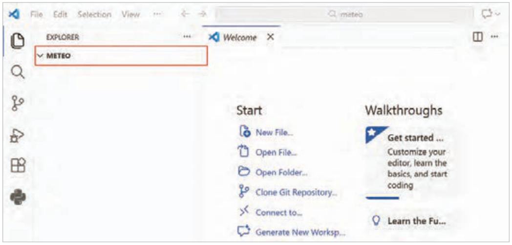
شکل ۵: باز کردن پوشه meteo
دوباره ترمینال را باز و دستور زیر را اجرا کنید (شکل 6):
django-admin startproject config .
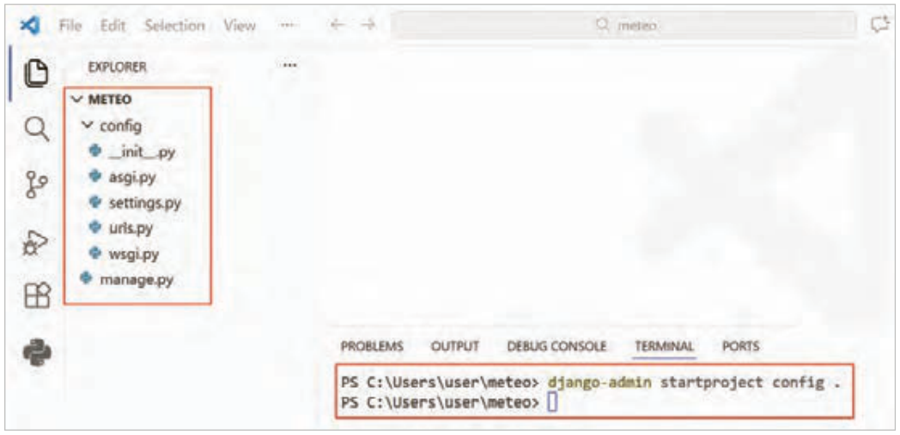
شکل ۶: ایجاد پروژه
صفحه ۲۸۱
دستور قبل، پوشه پروژه را با نام Config در مسیر جاری ایجاد میکند که حاوی فایل تنظیمات settings.py و فایلهای اصلی پروژه است. حرف نقطه در انتهای دستور فوق به معنی مسیر جاری است.
آشنایی با برخی فایلهای اصلی پروژه
فایلsettings.py: تنظیمات اصلی پروژه در این فایل قرار میگیرند.
فایلurls.py: هرگاه کاربر وارد یک آدرس (URL) شود، این فایل تعیین میکند که سایت کدام صفحه یا بخش را نمایش دهد.
اجرای پروژه جنگو
دستور زیر را در ترمینال اجرا نمایید.
python manage.py runserver دستور runserver یک وب سرور (web server) مجازی کوچک برای پروژه جنگو راهاندازی میکند، این وب سرور فقط مخصوص برنامهنویس جنگو است تا بتواند پروژه جنگو را در رایانه خودش اجرا کند (شکل 7).
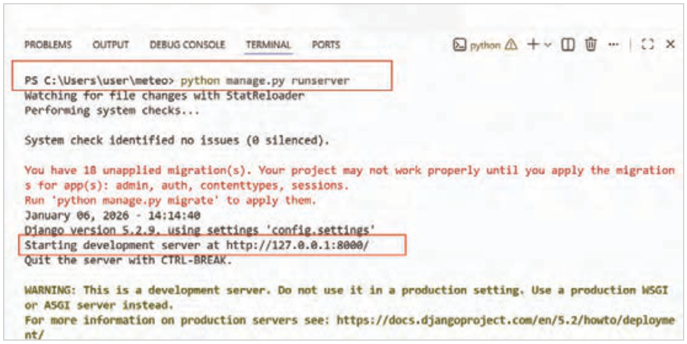
شکل ۷: راهاندازی موفق وب سرور جنگو
صفحه ۲۸۲
بعد از اجرای دستور، یک فایل با نام db.sqlite3 کنار فایل manage.py ساخته میشود. این فایل، پایگاهداده پیشفرض جنگو است. جنگو از این فایل برای مدیریت پایگاهداده و جداول استفاده میکند.
همانطوری که در شکل 7 مشخص شده است، میتوانید سایت خود را در آدرس http://127.0.0.1:8000 مشاهده کنید.
با تایپ آدرس فوق درون نوار آدرس مرورگر، صفحه اصلی سایت را مشابه شکل 8 مشاهده میکنید. ممکن است بهدلیل نسخههای متفاوت جنگو تصویر متفاوتی مشاهده کنید.
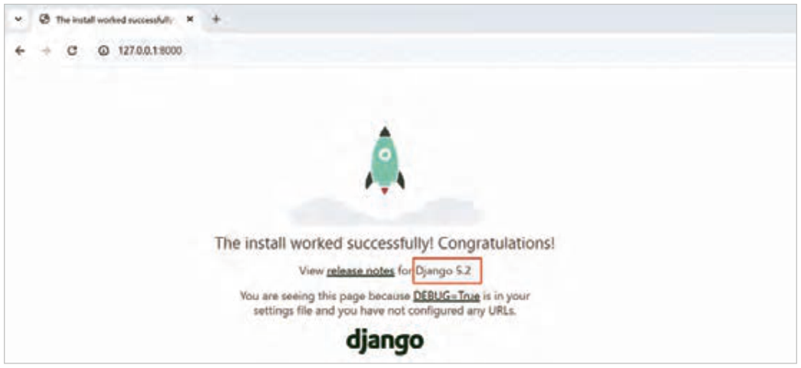
شکل ۸: اجرای موفقیتآمیز سایت
آدرس ip که جنگو روی آن اجرا میشود، 127.0.0.1 است. این آدرس به آدرس local معروف است. این ip به رایانه جاری اشاره میکند، یعنی همین رایانهای که سرور جنگو را روی آن اجرا کردهاید. اگر رایانه شما در یک شبکه قرار داشته باشد، رایانههای دیگر نمیتوانند با این آدرس، به رایانه شما متصل شوند.
ساخت اولین app در جنگو
یک پروژه جنگو میتواند شامل یک یا چندین app (اپلیکیشن) باشد. پروژهای که با دستور startproject ایجاد کردید، هنوز app ندارد. در جنگو میتوانید برای وظایف مستقل یک app ایجاد کنید.
فرض کنید پروژه شما یک کارخانه در دنیای واقعی است، واحدهای تولید کارخانه هرکدام میتوانند مانند یک app باشند. بهعنوانمثال، واحدی که وظیفه رنگکردن خودرو را برعهده دارد، مستقل از واحدهای دیگر میتواند عمل کند. کافی است یک خودرو به این واحد تحویل شود و رنگ درخواستی مشخص شود. این واحد کار خود را انجام داده و خودرو را رنگ شده تحویل میدهد.
هر app وظیفه خاصی انجام میدهد و باید بهصورتی ایجاد گردد که قابلیت استفاده مجدد داشته باشد، یعنی یک app را بتوان در پروژه دیگری استفاده کرد و همان وظیفه را بهخوبی انجام دهد.
صفحه ۲۸۳
برای ساخت app از دستور startapp استفاده میشود، ابتدا سرور جنگو را متوقف کرده (با ctrl + c) و سپس دستور زیر را اجرا کنید.
python manage.py startapp weather یکپوشه با نام weather ساخته میشود. پوشه weather در حقیقت یک app جنگویی است که وظیفه نمایش وضعیت آبوهوای شهر موردنظر را برعهده دارد.
پس از ساخت weather app ساختار پروژه همانند شکل 9 خواهد بود.
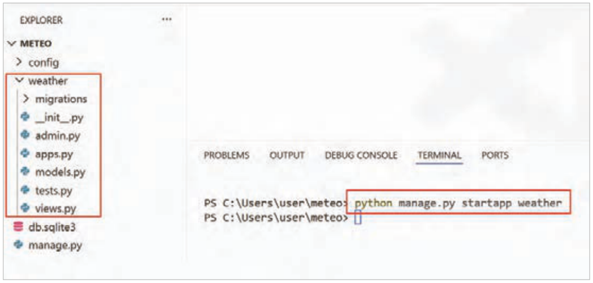
شکل ۹: محتوای weather app
معرفی app ایجاد شده به جنگو در settings.py
در این مرحله، لازم است app ساخته شده به جنگو معرفی شود. برای این کار فایل settings.py را باز کنید و weather را مطابق شکل 10 به انتهای لیست INSTALLED_APPS اضافه کنید.
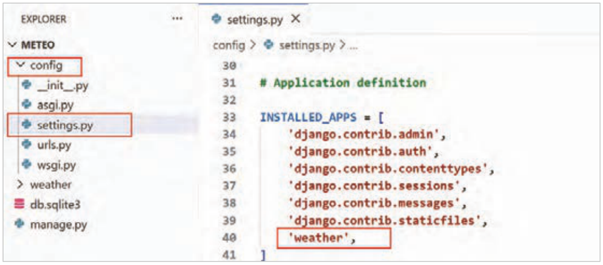
شکل ۱۰: اضافهکردن weather به installed_apps
صفحه ۲۸۴
ساخت اولین view
هر view که در فایل views.py است، برحسب وظیفهاش، با کاربر تعامل میکند، پس برای نمایش دمای یک شهر، یک view باید ساخته شود.
فایلهای View در جنگو مسئول پاسخگویی به درخواست کاربران هستند، یعنی Request کاربر را بعد از مسیریابی میگیرند و به آن درخواست یک پاسخ درست میدهند.
مرحله اول: فایل views.py را باز کنید. یک تابع با نام show_temp_view همانند شکل 11 اضافه کنید:
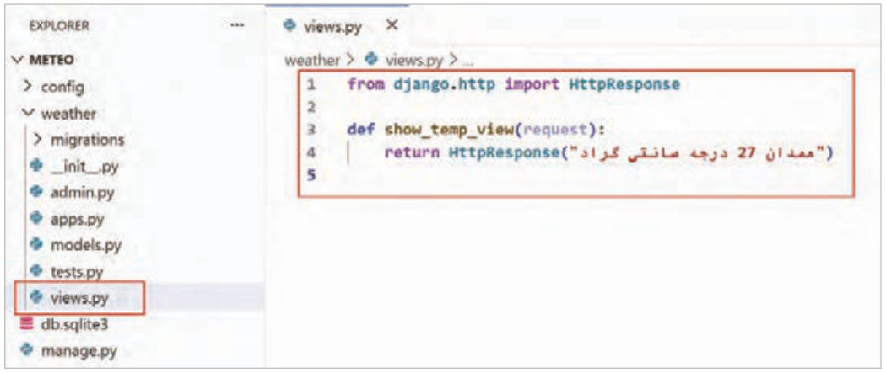
شکل ۱۱: ایجاد view با نام show_temp_view
توضیحات کدها:
خط 1: کلاس HttpResponse از ماژول http وارد (import) شده است.
خط 3: یک تابع با نام show_temp_view ایجاد شده است. هر view در جنگو، تابعی است که باید پارامتر request را داشته باشد.
خط 4: یک object از نوع HttpResponse ایجاد شده است. HttpResponse محتوای نهاییِ ارسالشده به مرورگر را در خود نگهداری میکند و مشخص میکند کاربر چه چیزی از سرور دریافت کند.
تابع show_temp_view در فایل views.py فقط یک متن ساده، نمایش خواهد داد.
فایل را ذخیره نمایید و سرور جنگو را با python manage.py runserver راهاندازی کنید.
آدرس صفحه اصلی را وارد کنید، باز هم صفحه خوشامدگویی را میبینید. پس لازم است تغییراتی اعمال کنید تا در صفحه اصلی سایت، بهجای خوشامدگویی متن «همدان 27 درجه سانتیگراد» نمایش داده شود. فایل urls.py در پوشه config را باز کنید (شکل 12).
صفحه ۲۸۵
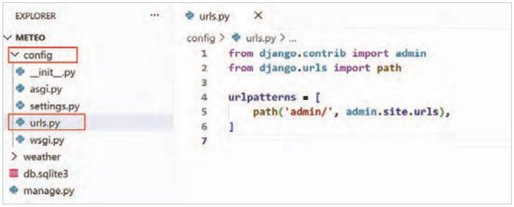
شکل ۱۲: فایل urls.py
بعد از ایجاد پروژه، فایل urls.py نیز کنار settings.py ایجاد میشود. هرگاه کاربر وارد یک آدرس (URL) شود، این فایل تعیین میکند که سایت کدام صفحه یا بخش را نمایش دهد.
توضیحات کدها:
خط 4: جنگو از یک لیست با نام urlpatterns برای مدیریت آدرس صفحات سایت استفاده میکند.
خط 5: هر عضو از urlpattrns یک path است که معادل آدرس یک صفحه در سایت است. بهصورت پیشفرض یک path برای صفحه پنل ادمین جنگو با مقدار /admin وجود دارد که معادل آدرس http://127.0.0.1:8000/admin در مرورگر است.
آدرس http://127.0.0.1:8000/admin را در مرورگر باز کنید. صفحه ورود به پنل ادمین همانند شکل 13 از شما نام کاربری و رمز عبور را درخواست میکند. در ادامه روش ساخت نام کاربری و رمز عبور را خواهید آموخت.
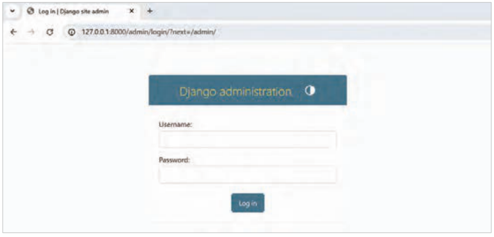
شکل ۱۳: صفحه ورود به پنل ادمین
صفحه ۲۸۶
مرحله دوم: دوباره وارد فایل urls.py شده و تغییراتی همانند شکل 14 در فایل اعمال کنید.
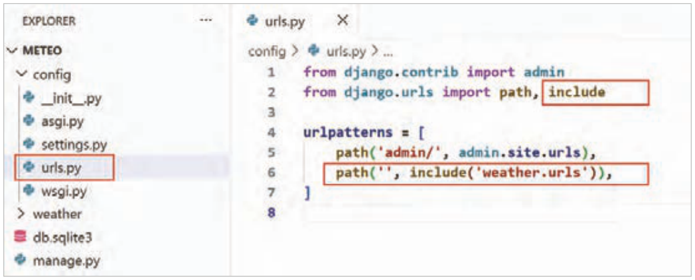
شکل ۱۴: اضافهکردن path جدید
توضیحات کدها:
خط 2: ماژول include وارد (import) شده است.
خط 6: یک path جدید اضافه شده است. اولین آرگومان تابع path در این دستور فقط یکرشته خالی است و به این معناست که اگر در آدرس (URL) رسیده به سرور جنگو، جلوی آدرس سایت هیچ عبارتی درج نشده بود، با استفاده از ماژول include به سراغ فایل urls.py در weather app بروید و کار را از آنجا ادامه دهید. در واقع این خط، درخواستهای صفحۀ اصلی را به weather app ارسال میکند.
مرحله سوم: وارد پوشه weather شده و برای weather app یک urls.py همانند شکل 15 ایجاد کنید. هر app میتواند یک urls.py اختصاصی داشته باشد.
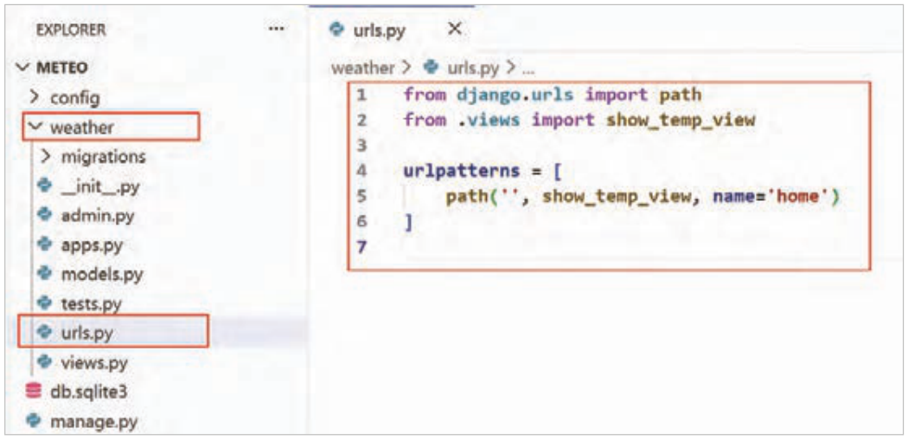
شکل ۱۵: ایجاد فایل urls.py برای app
Page 280
Creating the weather project
In VSCode, click the Open Folder option from the File menu. Then create a new folder named meteo at a path of your choice and open the meteo folder you made (Figure 5):
Figure 5: Opening the meteo folder
Open the terminal again and run the following command (Figure 6):
django-admin startproject config .
Figure 6: Creating the project
Page 281
The previous command creates the project folder named Config in the current path, which contains the settings file settings.py and the main files of the project. The dot at the end of the command above means the current path.
Getting to know some of the project's main files
The file settings.py: the main settings of the project are in this file.
The file urls.py: whenever the user enters an address (URL), this file decides which page or part the site shows.
Running the Django project
Run the following command in the terminal.
python manage.py runserver The command runserver sets up a small virtual web server for the Django project; this web server is only for the Django programmer so that they can run the Django project on their own computer (Figure 7).
Figure 7: Successful start of the Django web server
Page 282
After running the command, a file named db.sqlite3 is made next to the file manage.py. This file is Django's default database. Django uses this file to manage the database and tables.
As is shown in Figure 7, you can see your site at the address http://127.0.0.1:8000.
By typing the address above in the browser's address bar, you see the main page of the site similar to Figure 8. You may see a different picture because of different versions of Django.
Figure 8: Successful run of the site
The IP address on which Django runs is 127.0.0.1. This address is known as the local address. This IP points to the current computer, that is, the very computer on which you ran the Django server. If your computer is on a network, other computers cannot connect to your computer with this address.
Making the first app in Django
A Django project can include one or several apps (applications). The project you created with the startproject command has no app yet. In Django you can create an app for independent tasks.
Suppose your project is a factory in the real world; each of the factory's production units can be like an app. For example, the unit responsible for painting cars can work independently of the other units. It is enough that a car is delivered to this unit and the requested colour is specified. This unit does its job and delivers the car painted.
Each app does a specific job and must be created in a way that can be reused, that is, an app can be used in another project and do the same job well.
Page 283
To make an app, the startapp command is used; first stop the Django server (with ctrl + c) and then run the following command.
python manage.py startapp weather A folder named weather is made. The weather folder is in fact a Django app that is responsible for showing the weather of the wanted city.
After making the weather app the structure of the project will be like Figure 9.
Figure 9: The content of the weather app
Introducing the created app to Django in settings.py
At this step, the app that was made must be introduced to Django. For this open the file settings.py and add weather to the end of the list INSTALLED_APPS as in Figure 10.
Figure 10: Adding weather to installed_apps
Page 284
Making the first view
Each view that is in the file views.py interacts with the user according to its job, so to show the temperature of a city, a view must be made.
View files in Django are responsible for answering the users' requests, that is, they take the user's Request after routing and give that request a correct response.
First step: open the file views.py. Add a function named show_temp_view as in Figure 11:
Figure 11: Creating a view named show_temp_view
Explanation of the code:
Line 1: the class HttpResponse is imported from the http module.
Line 3: a function named show_temp_view is created. Every view in Django is a function that must have the parameter request.
Line 4: an object of the type HttpResponse is created. HttpResponse holds the final content sent to the browser and specifies what the user gets from the server.
The function show_temp_view in the file views.py will only show a simple text.
Save the file and start the Django server with python manage.py runserver.
Enter the address of the main page; you still see the welcome page. So you need to make changes so that, on the main page of the site, instead of the welcome the text "Hamedan 27 degrees Celsius" is shown. Open the file urls.py in the config folder (Figure 12).
Page 285
Figure 12: The file urls.py
After the project is created, the file urls.py is also created next to settings.py. Whenever the user enters an address (URL), this file decides which page or part the site shows.
Explanation of the code:
Line 4: Django uses a list named urlpatterns to manage the addresses of the pages of the site.
Line 5: each member of urlpatterns is a path that is equal to the address of a page in the site. By default there is a path for the page of Django's admin panel with the value /admin, which is equal to the address http://127.0.0.1:8000/admin in the browser.
Open the address http://127.0.0.1:8000/admin in the browser. The admin panel sign-in page, as in Figure 13, asks you for a username and password. Next you will learn how to create a username and password.
Figure 13: The admin panel sign-in page
Page 286
Second step: enter the file urls.py again and make changes as in Figure 14 in the file.
Figure 14: Adding a new path
Explanation of the code:
Line 2: the module include is imported.
Line 6: a new path is added. The first argument of the function path in this statement is only an empty string, which means that if in the address (URL) that reached the Django server nothing was written after the address of the site, then, using the module include, go to the file urls.py in the weather app and continue the work from there. In fact this line sends the requests of the main page to the weather app.
Third step: enter the weather folder and create a urls.py for the weather app as in Figure 15. Each app can have its own urls.py.